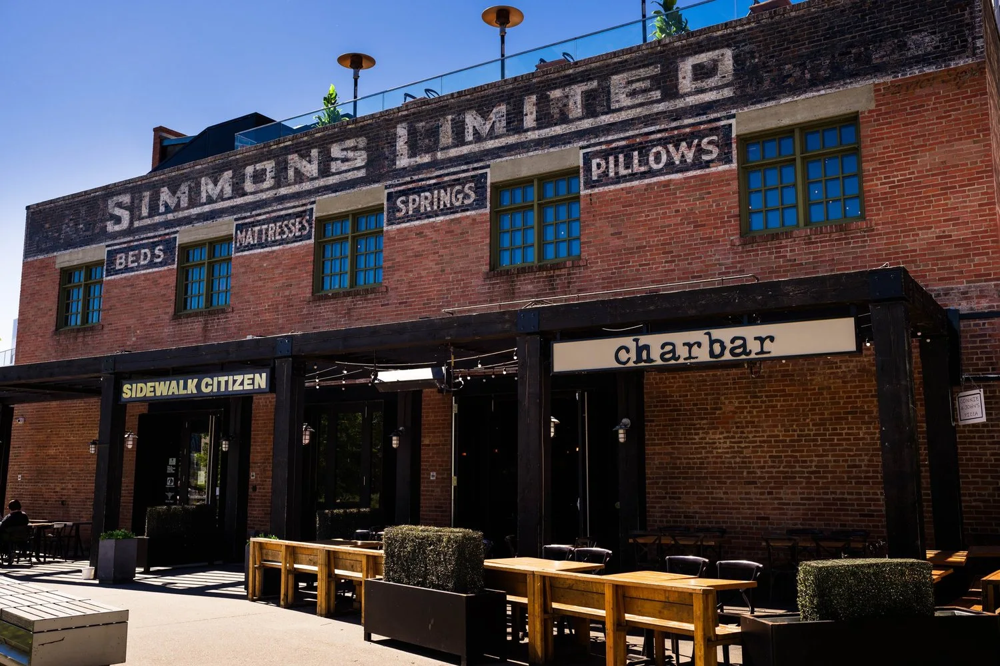

618 CONFLUENCE WAY SE · CALGARY
Find us by the Bow.
You’ll find us in the Simmons Building in East Village, right beside the Bow River.

COME ON OVER
Hours & address.
618 Confluence Way SECalgary, Alberta T2G 0G1
When to find us
- Monday – Thursday
- 11:30 am – 10 pm
- Friday
- 11:30 am – 11 pm
- Saturday
- 10 am – 11 pm
- Sunday
- 10 am – 10 pm
Weekend brunch until 4 pm. Dinner from 4 pm.
Walk-ins are welcome in the restaurant and cocktail bar.
BEFORE YOU COME OVER
Before your visit.
Can we walk in?
Yes. Walk-ins are welcome in the dining room and cocktail bar. Reserving ahead is a good way to plan your visit; availability is confirmed through our booking partner.
Where can I find the menus?
All six menus are right here, including lunch features, weekend brunch, dessert, drinks and happy hour.
Browse all menus ↗Do you accommodate dietary requirements?
Please speak with the team about allergies and dietary requirements before ordering. For questions before your visit, call 403 452 3115. Our menus do not replace individual advice from the kitchen.
Is the rooftop open?
Connie & John’s rooftop patio is currently closed for the season. The charbar dining room is open during the hours above.
About the rooftop ↗What about access, parking or a larger group?
Charbar is wheelchair accessible and welcomes guests of all ages. Street parking and nearby paid lots are available; follow the posted parking zones. For specific access requirements, call 403 452 3115 before your visit. For private gatherings, contact the events team.
Plan a gathering ↗